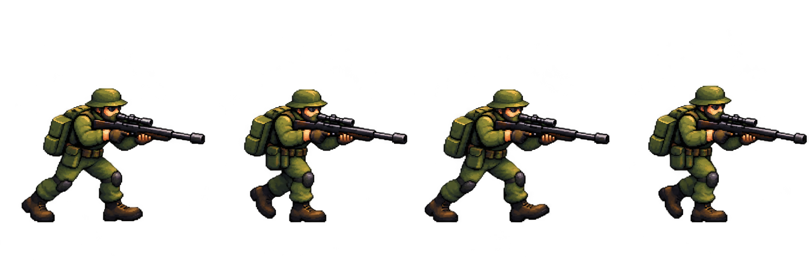

Generated row with nominal four-cell grid
The art is stronger, but three figures cross the equal-width cell boundaries. The red rules mark the requested cuts.

One controlled generation using the selected Sculpted Pixel concept as reference. This is an asset-production test, not a game asset.
The art is stronger, but three figures cross the equal-width cell boundaries. The red rules mark the requested cuts.
